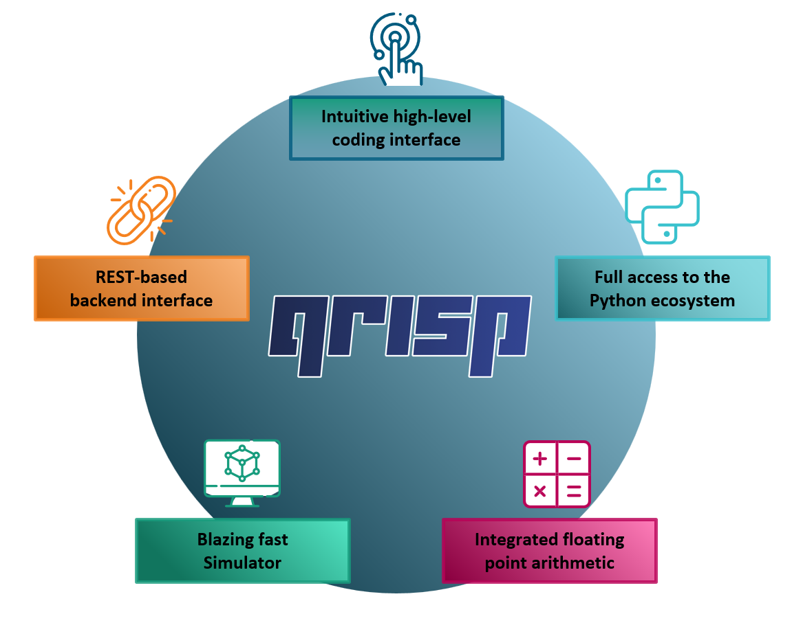

What is Qrisp?#
Qrisp is a high-level programming language for working with quantum computers. Qrisp is designed to enable programmers to write complex quantum algorithms with the ease of a modern day programming language while still compiling down to the circuit level. By automating much of the low-level coding duties, such as gate-by-gate assembly or qubit management, we aim to open this field of research to a broad audience of developers. Qrisp is being developed at Fraunhofer FOKUS funded by the German ministry for economic affairs and climate action.
To get an overview over some features, we recommend checking the tutorial. In-depth documentation can be found in the reference.
Already familiar with Qrisp? Check out what’s new in version 0.2!
{kind=link}
Why should you use Qrisp over other quantum frameworks?#
With Qrisp, you can concentrate on the crucial aspects of your code and reduce the burden of overseeing individual qubits and quantum gates. Due to a sophisticated qubit management system, recycled quantum resources are automatically reused across functions, implying Qrisp code can be modularized effectively. Combined with a typing system, which is smoothly integrated into the Python infrastructure, scalable algorithm development is a straightforward process. Qrisp is lightweight and fast yielding a convenient development workflow. Below you find two code snippets that perform the same basic task: Multiplication of two n-bit integers. One is written using Qiskit and the other one utilizes Qrisp.
from qiskit import (QuantumCircuit, QuantumRegister,
ClassicalRegister, Aer, execute)
from qiskit.circuit.library import RGQFTMultiplier
n = 6
a = QuantumRegister(n)
b = QuantumRegister(n)
res = QuantumRegister(2*n)
cl_res = ClassicalRegister(2*n)
qc = QuantumCircuit(a, b, res, cl_res)
for i in range(len(a)):
if 3 & 1<<i: qc.x(a[i])
for i in range(len(b)):
if 4 & 1<<i: qc.x(b[i])
qc.append(RGQFTMultiplier(n, 2*n),
list(a) + list(b) + list(res))
qc.measure(res, cl_res)
backend = Aer.get_backend('qasm_simulator')
counts_dic = execute(qc, backend).result().get_counts()
print({int(k, 2) : v for k, v in counts_dic.items()})
#Yields: {12: 1024}
|
from qrisp import QuantumFloat
n = 6
a = QuantumFloat(n)
b = QuantumFloat(n)
a[:] = 3
b[:] = 4
res = a*b
print(res)
#Yields: {12: 1.0}
|
Apart from simple scripts like the above, our tutorial showcases the utilization of Qrisp in solving the traveling salesman problem. This solution involves over 10 distinct QuantumVariables, with their respective qubits being repeatedly disentangled and repurposed for other variables. The presented approach scales better in the qubit count than the previously known QUBO based solution: \(\mathcal{O}(n \text{log}(n))\) vs. \(\mathcal{O}(n^2)\).
This example illustrates how Qrisp, as a high-level language, permits novel and scalable solutions to intricate problems and furthermore that high-level quantum programming languages will be an integral part of the future of quantum information science.
Contact#
Qrisp is being developed at Fraunhofer FOKUS. You can reach us via
Raphael Seidel (Architect/Developer)
raphael.seidel@fokus.fraunhofer.de
Sebastian Bock (Project Manager/Developer)
sebastian.bock@fokus.fraunhofer.de
Nikolay Tcholtchev (Project Manager)
nikolay.tcholtchev@fokus.fraunhofer.de